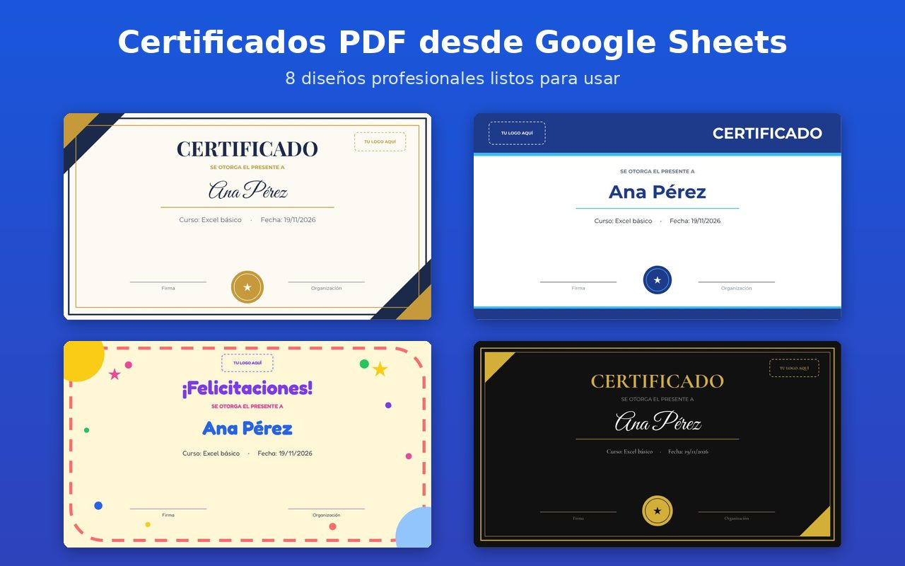
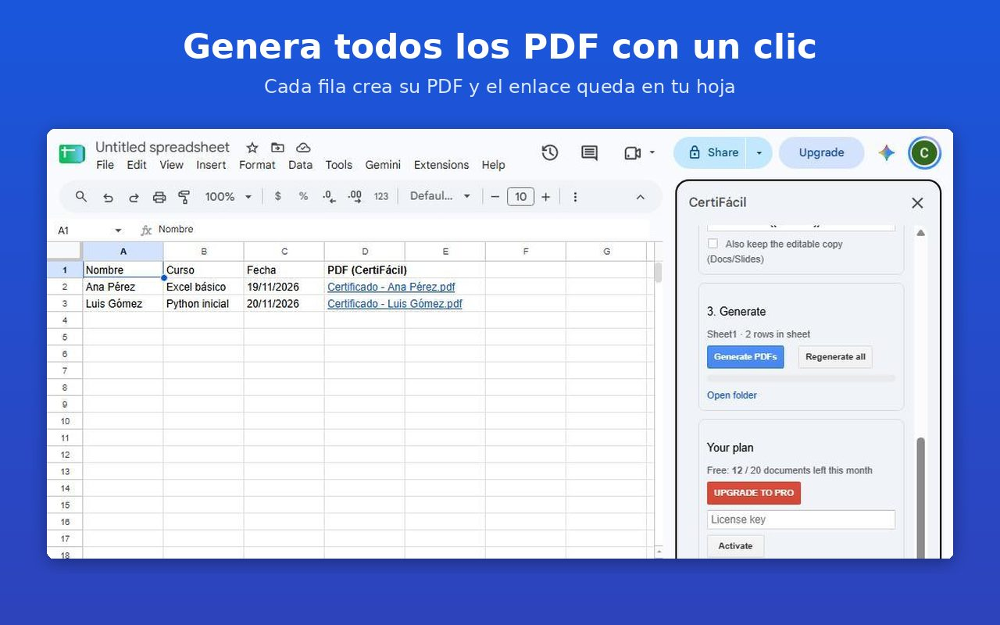

ES: CertiFácil es un complemento de Google Sheets™ que convierte cada fila de tu hoja en un certificado, diploma o constancia en PDF. Elige uno de los 8 diseños listos o tu propia plantilla de Google Docs™ o Slides con campos como {{Nombre}}. Cada PDF se guarda en una carpeta de tu Drive y su enlace queda en la hoja.
EN: CertiFácil is a Google Sheets™ add-on that turns each row of your sheet into a PDF certificate, diploma or award. Pick one of 8 ready-made designs or your own Google Docs™ or Slides template with fields like {{Name}}. Each PDF is saved to a folder in your Drive and its link is written back to the sheet.


Gratis: 20 documentos al mes. Pro: ilimitado, 5 USD/mes o 39 USD/año. / Free: 20 documents per month. Pro: unlimited, 5 USD/month or 39 USD/year.
CertiFácil solo accede a la hoja donde lo abres, a las plantillas que eliges y a los archivos que crea, y usa esos datos únicamente para generar tus documentos. / CertiFácil only accesses the sheet where it is opened, the templates you choose and the files it creates, and uses that data only to generate your documents. Política de privacidad / Privacy Policy · Términos / Terms
brassabacuscontact@gmail.com
Google Sheets™ y Google Docs™ son marcas comerciales de Google LLC. Brass Abacus no está afiliado a Google. / Google Sheets™ and Google Docs™ are trademarks of Google LLC. Brass Abacus is not affiliated with Google.